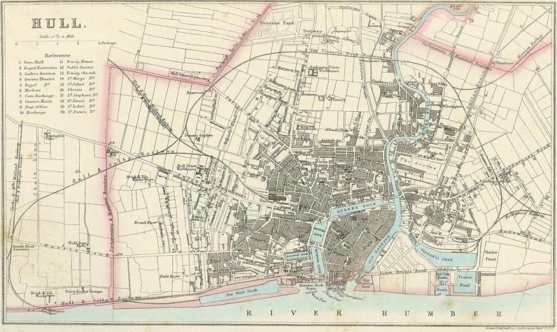
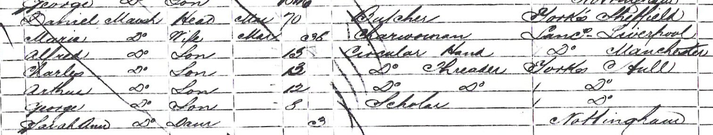
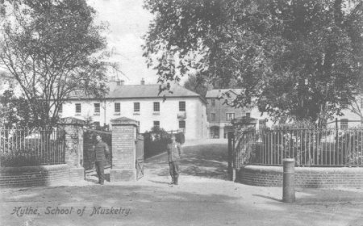

Charles Marsh, 1849 - 1933

Charles Francis Marsh was born in 1849 in Hull, Yorkshire, the son of butcher Daniel Marsh and Maria Floyd. There is no trace of a birth certificate for Charles but he was baptised in All Saints Hull in January 1849. Daniel Marsh and Maria Floyd had moved to Hull from Manchester in about 1847. Daniel had left his wife Mary in Liverpool and appears to have eloped with Maria, who was a laundress and half his age. Charles was the second of their five children and the family appeared to settle in Great Passage Street Hull where Daniel traded as a butcher.
By the time Charles was 12 in 1861 the family had moved again, this time to St Mary's Nottingham.They were living in the notoriously poor Narrow Marsh area in Martins Yard. Although only 12, Charles was already employed in the local lace trade as a circular threader. Daniel was still described as a butcher.

At the age of 18 Charles began a brief spell in the army and enlisted into 2/6th Foot (Royal Warwickshire Regiment) on 1st March 1867. At the time of enlistment he was described as a labourer. His service number was 1694 and he served as a Private in E Company of the 2nd Battalion of the 6th Regiment . He joined his regiment in Edinburgh on 6 May 1867 before moving to Aldershot in 1868. The battalion spent two years in Wales in 1869-70 before moving to Buttevant Ireland in October 1870. By the time of the 1871 census we find Charles posted to the School of Musketry at St Leonard, Hythe . After a tour including the Curragh Camp, Newry and Belfast the battalion moved to Guernsey in 1874/75. Charles spent his last two years of service at Aldershot and Dover. After 10 years of service he was discharged as 'time served' in Dover on 1 March 1877.

On his discharge Charles returned to Nottingham and found employment as a lace maker and by 1880 he was living in Sneinton Elements. Within three years of leaving the army he had married Henrietta Marshall , at St Matthias in Sneinton on 28 November 1880. Henrietta was the daughter of George and Jane Marshall and she was a cotton winder from Oldham Street, Nottingham. During the 1880s Charles works briefly as a painter but he returns to lace making before the end of the decade.
In 1891 Charles and Henrietta were living in Beeston, moving to Crown and Anchor Yard, London Road, before 1901. The 1901 and 1911 census are however a mystery as Charles appears to change the family name to Stanley. Charles and Henrietta had nine children in total, including their youngest Edith Marsh in 1899.

In October 1908 Henrietta dies at home in Newark Street, Nottingham. Charles is present at the death. From 1911 we know little of Charles life until his own death in January 1933 aged 84. He was buried in a family grave in the Church Cemetery, Mansfield Road, together with three other members of the family including his wife, daughter and grand daughter, out-living them all.